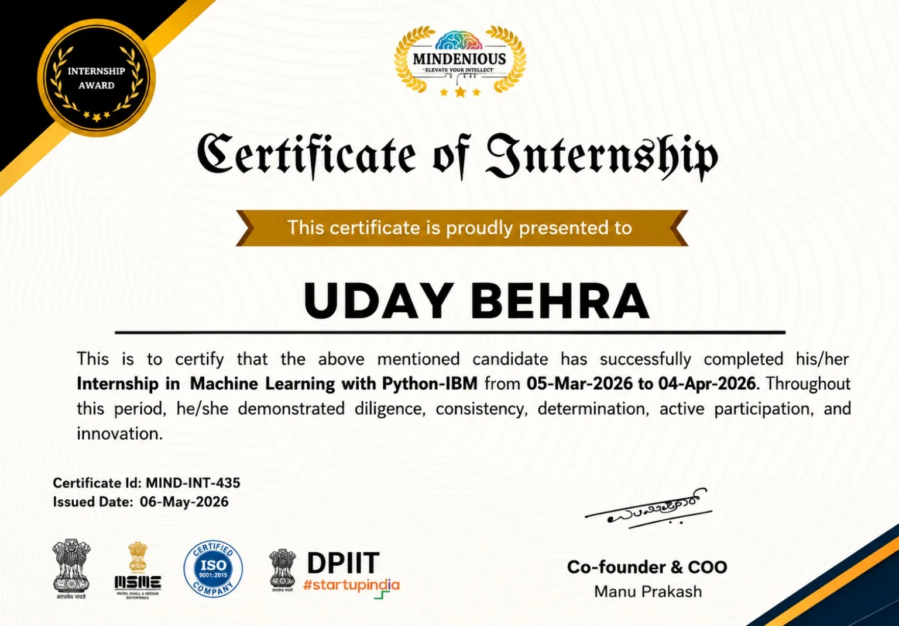
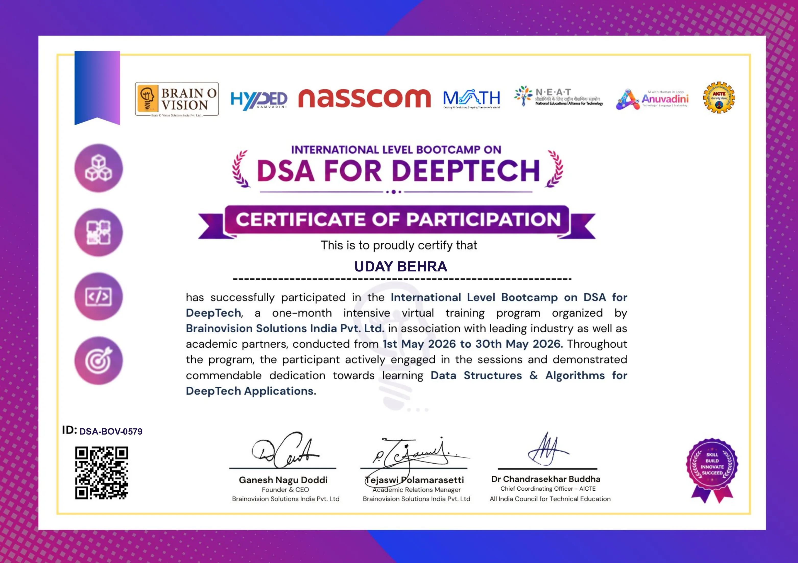

EDUCATION
Bachelor of Computer Applications
Srinath University · School of Information Technology
Building foundations in programming, databases, web technologies, software development and computer science.
CURRENTLY PURSUING04 / JOURNEY
My learning journey so far — academic foundations, practical experience and milestones along the way.
Building foundations in programming, databases, web technologies, software development and computer science.
CURRENTLY PURSUINGPractical learning focused on data science and machine learning, alongside continued project-based development.
LEARNING EXPERIENCEStrengthening Python, data tools, web development and problem-solving through hands-on work.
IN PROGRESS
